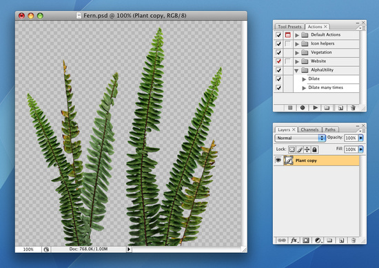
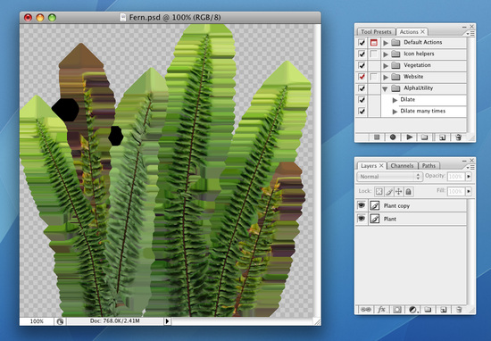
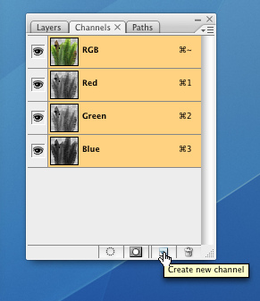

How Do I Import Alpha Textures?
Unity uses straight alpha blending. Hence, you need to expand the color layers... The alpha channel in Unity will be read from he first alpha channel in the Photoshop file.
Setting Up
Before doing this, install these alpha utility photoshop actions: AlphaUtility.atn.zip
After installing, your Action Palette should contain a folder called AlphaUtility:

Getting Alpha Right
Let's assume you have your alpha texture on a transparent layer inside photoshop. Something like this:

- Duplicate the layer
- Select the lowest layer. This will be source for the dilation of the background.
- Select and apply with the default properties
- Run the "Dilate Many" action a couple of times. This will expand the background into a new layer.

- Select all the dilation layers and merge them with
 - Create a solid color layer at the bottom of your image stack. This should match the general color of your document (in this case, greenish).
Now we need to copy the transparency into the alpha layer.
- Set the selection to be the contents of your main layer by Command-clicking on it in the Layer Palette.
- Switch to the channels palette.
- Create a new channel from the transparency.

Save your PSD file - you are now ready to go.